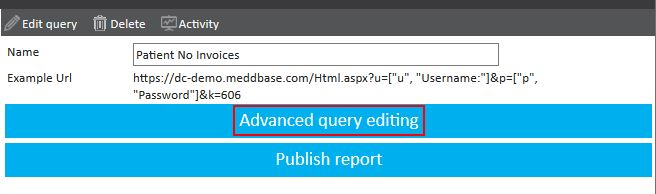
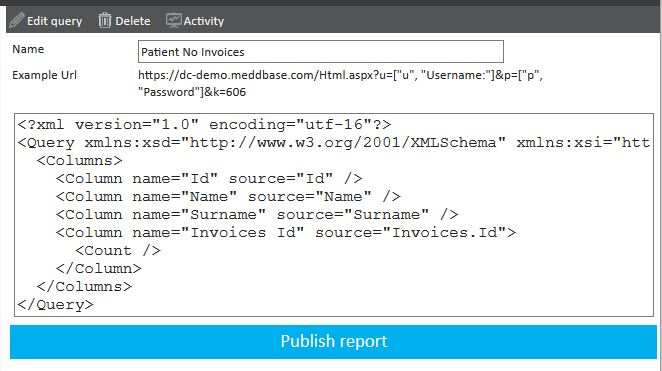
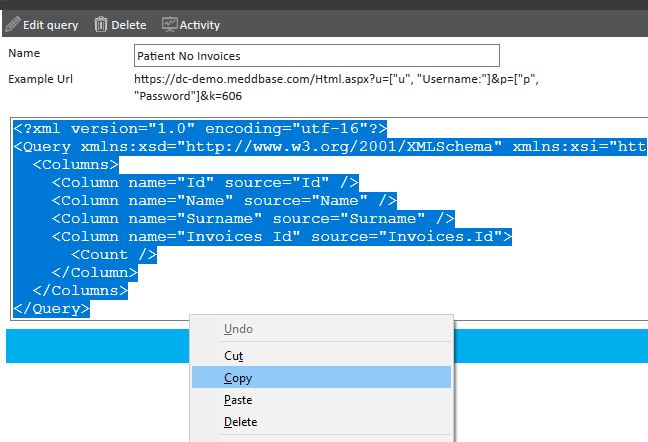
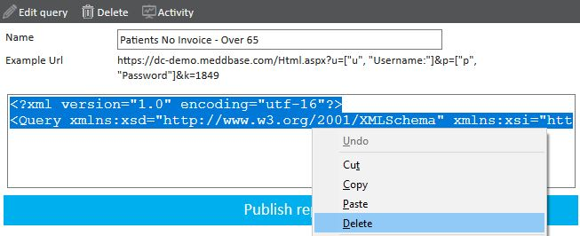
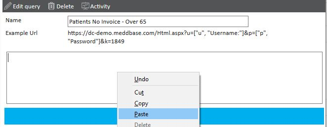

When a report is shared across multiple departments, not all columns or data may be relevant to each department. To accommodate specific needs, it is often beneficial to duplicate the report and tailor the duplicate. Using XML is the most straightforward way to achieve this.
This article explains how to duplicate a report in the system using XML.
Navigate to Start Page > Admin > Report Management to access your reports and select the report you wish to duplicate.



Click ‘New Report Query’ and Choose the appropriate root table for the new report, once selected save the report with the desired name for the duplicate.
Return to the Report Management screen and locate the duplicated report. Select ‘Advanced query editing’. Select all the XML here and delete this. Then paste in the XML that had been copied earlier.
Clicking out of the XML box will auto-save these changes.


This will automatically update the query, allowing for this to now be edited using the ‘Edit Query’ option.